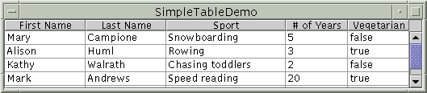
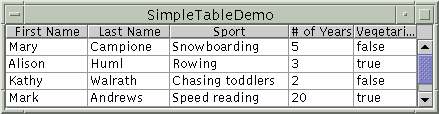
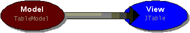
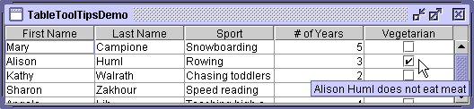
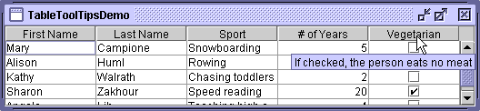

Feedback Form
|
|
Start of Tutorial > Start of Trail > Start of Lesson |
Search
Feedback Form |
With theJTableclass you can display tables of data, optionally allowing the user to edit the data.
JTabledoesn't contain or cache data; it's simply a view of your data. Here's a picture of a typical table displayed within a scroll pane:[PENDING: Update this snapshot. Label these parts: - each cell displays an item of data - each column header describes its column maybe also have these labels: - each column contains one type of data - a table header displays the column headers]The rest of this section tells you how to accomplish some common table-related tasks. Here are the topics this section covers:
- Creating a Simple Table
- Adding a Table to a Container
- Setting and Changing Column Widths
- Detecting User Selections
- Creating a Table Model
- Detecting Data Changes
- Concepts: Editors and Renderers
- Using a Combo Box as an Editor
- Using an Editor to Validate User-Entered Text
- Using Other Editors
- Using Custom Renderers
- Specifying Tool Tips for Cells
- Specifying Tool Tips for Column Headers
- Sorting and Otherwise Manipulating Data
- The Table API
- Examples that Use Tables
[PENDING: This figure will be updated.] Here is the code that implements the table in
Try this:
- Run SimpleTableDemo using JavaTM Web Start
. Or, to compile and run the example yourself, consult the example index.
- Click the cell that contains "Snowboarding".
The entire first row is selected, indicating that you have selected Mary Campione's data. A special highlight indicates that the "Snowboarding" cell is editable. Generally, you begin editing a text cell by double-clicking it.- Position the cursor over "First Name". Now press the mouse button and drag to the right.
As you can see, users can rearrange columns in tables.- Position the cursor just to the right of a column header. Now press the mouse button and drag to the right or left.
The column changes size, and the other columns adjust to fill the remaining space.- Resize the window containing the table so that it's bigger than necessary to display the whole table.
All the table cells become wider, expanding to fill the extra horizontal space.SimpleTableDemo.java:
TheString[] columnNames = {"First Name", "Last Name", "Sport", "# of Years", "Vegetarian"}; Object[][] data = { {"Mary", "Campione", "Snowboarding", new Integer(5), new Boolean(false)}, {"Alison", "Huml", "Rowing", new Integer(3), new Boolean(true)}, {"Kathy", "Walrath", "Knitting", new Integer(2), new Boolean(false)}, {"Sharon", "Zakhour", "Speed reading", new Integer(20), new Boolean(true)}, {"Philip", "Milne", "Pool", new Integer(10), new Boolean(false)} }; JTable table = new JTable(data, columnNames);SimpleTableDemoexample uses one of twoJTableconstructors that directly accept data:The advantage of these constructors is that they're easy to use. However, these constructors also have disadvantages:
JTable(Object[][] rowData, Object[] columnNames)JTable(Vector rowData, Vector columnNames)If you want to get around these restrictions, you need to implement your own table model, as described in Creating a Table Model.
- They automatically make every cell editable.
- They treat all data types the same (as strings). For example, if a table column has
Booleandata, the table can display the data in a check box. However, if you use one of the twoJTableconstructors listed previously, yourBooleandata will be displayed as a string. You can see this difference in the last column of the two previous pictures of tables.- They require that you put all of the table's data in an array or vector, which isn't appropriate for some data. For example, if you're instantiating a set of objects from a database, you might want to query the objects directly for their values, rather than copying all their values into an array or vector.
It's easy to put a table in a scroll pane. You need just one or two lines of code:The scroll pane automatically gets the table's header, which displays the column names, and puts it on top of the table. Even when the user scrolls down, the column names remain visible at the top of the viewing area. The scroll pane also tries to make its viewing area the same as the table's preferred viewing size. The previous code snippet sets the table's preferred viewing size with theJScrollPane scrollPane = new JScrollPane(table); table.setPreferredScrollableViewportSize(new Dimension(500, 70));setPreferredScrollableViewportSizemethod.If you're using a table without a scroll pane, then you must get the table header component and place it yourself. For example:
container.setLayout(new BorderLayout()); container.add(table.getTableHeader(), BorderLayout.PAGE_START); container.add(table, BorderLayout.CENTER);
By default, all columns in a table start out with equal width, and the columns automatically fill the entire width of the table. When the table becomes wider or narrower (which might happen when the user resizes the window containing the table), all the column widths change appropriately.When the user resizes a column by dragging its right border, then either other columns must change size, or the table's size must change. By default, the table's size remains the same, and all columns to the right of the drag point resize to accommodate space added to or removed from the column to the left of the drag point.
The following figures illustrate the default resizing behavior. [PENDING: These will be updated.]
Initially, the columns have equal width.
When the user resizes a column, some of the other columns must adjust size for the table to stay the same size.
When the entire table is resized, all the columns are resized.To customize initial column widths, you can invoke
setPreferredWidthon each of your table's columns. This sets both the preferred widths of the columns and their approximate relative widths. For example, adding the following code toSimpleTableDemomakes its third column bigger than the other columns:TableColumn column = null; for (int i = 0; i < 5; i++) { column = table.getColumnModel().getColumn(i); if (i == 2) { column.setPreferredWidth(100); //sport column is bigger } else { column.setPreferredWidth(50); } }As the preceding code shows, each column in a table is represented by a
TableColumnTableColumnsupplies getter and setter methods for the minimum, preferred, and maximum widths of a column, as well as a method for getting the current width. For an example of setting cell widths based on the actual amount of space needed to draw the cells' contents, see theinitColumnSizesmethod inTableRenderDemo.javaWhen the user explicitly resizes columns, the columns' preferred widths are set such that the user-specified sizes become the columns' new current widths. However, when table itself is resized — typically because the window has resized — the columns' preferred widths do not change. Instead, the existing preferred widths are used to calculate new column widths to fill the available space.
You can change a table's resize behavior by invoking the
setAutoResizeModemethod. The method's argument should have one of these values (defined as constants inJTable):
AUTO_RESIZE_SUBSEQUENT_COLUMNS- The default. In addition to resizing the column to the left of the drag point, adjusts the sizes of all columns to the right of the drag point.
AUTO_RESIZE_NEXT_COLUMN- Adjusts only the columns immediately to the left and right of the drag point.
AUTO_RESIZE_OFF- Adjusts the table size instead.
The following code snippet shows how to detect when the user selects a table row. By default, a table allows the user to select multiple rows — not columns or individual cells — and the selected rows need not be next to each other. Using thesetSelectionModemethod, the following code specifies that only one row at a time can be selected.The code is fromtable.setSelectionMode(ListSelectionModel.SINGLE_SELECTION); ... //Ask to be notified of selection changes. ListSelectionModel rowSM = table.getSelectionModel(); rowSM.addListSelectionListener(new ListSelectionListener() { public void valueChanged(ListSelectionEvent e) { //Ignore extra messages. if (e.getValueIsAdjusting()) return; ListSelectionModel lsm = (ListSelectionModel)e.getSource(); if (lsm.isSelectionEmpty()) { ...//no rows are selected } else { int selectedRow = lsm.getMinSelectionIndex(); ...//selectedRow is selected } } });SimpleTableSelectionDemo.javaFor more information and examples of implementing selection, see How to Write a List Selection Listener.
As the following figure shows, every table gets its data from an object that implements theTableModel [PENDING: This figure might be updated to look more modern.]The
JTableconstructor used bySimpleTableDemocreates its table model with code like this:As the preceding code shows, implementing a table model can be simple. Generally, you implement your table model in a subclass of thenew AbstractTableModel() { public String getColumnName(int col) { return columnNames[col].toString(); } public int getRowCount() { return rowData.length; } public int getColumnCount() { return columnNames.length; } public Object getValueAt(int row, int col) { return rowData[row][col]; } public boolean isCellEditable(int row, int col) { return true; } public void setValueAt(Object value, int row, int col) { rowData[row][col] = value; fireTableCellUpdated(row, col); } }AbstractTableModelYour model might hold its data in an array, vector, or hash map, or it might get the data from an outside source such as a database. It might even generate the data at execution time.
Here again is a picture of a table implemented by
TableDemo(which you can run using Java Web Start[PENDING: This figure will be updated.] This table is different from the
SimpleTableDemotable in the following ways:
TableDemo's custom table model, even though it's simple, can easily determine the data's type, helping theJTabledisplay the data in the best format.SimpleTableDemo's automatically created table model, on the other hand, isn't smart enough to know that the # of Years column contains numbers (which should generally be right aligned and have a particular format). It also doesn't know that theVegetariancolumn contains boolean values, which can be represented by check boxes.- In
TableDemo, we implemented the custom table model so that it doesn't let you edit the name columns; it does, however, let you edit the other columns. InSimpleTableDemo, all cells are editable.Below is the code from
TableDemo.javaSimpleTableDemo.javaSimpleTableDemo.public TableDemo() { ... JTable table = new JTable(new MyTableModel()); ... } class MyTableModel extends AbstractTableModel { private String[] columnNames = ...//same as before... private Object[][] data = ...//same as before... public int getColumnCount() { return columnNames.length; } public int getRowCount() { return data.length; } public String getColumnName(int col) { return columnNames[col]; } public Object getValueAt(int row, int col) { return data[row][col]; } public Class getColumnClass(int c) { return getValueAt(0, c).getClass(); } /* * Don't need to implement this method unless your table's * editable. */ public boolean isCellEditable(int row, int col) { //Note that the data/cell address is constant, //no matter where the cell appears onscreen. if (col < 2) { return false; } else { return true; } } /* * Don't need to implement this method unless your table's * data can change. */ public void setValueAt(Object value, int row, int col) { data[row][col] = value; fireTableCellUpdated(row, col); } ... }
A table and its model automatically detect whenever the user edits the table's data. However, if the data changes for another reason, you must take special steps to notify the table and its model of the data change. Also, if you don't implement a table model, as inSimpleTableDemo, then you must take special steps to find out when the user edits the table's data.An example of updating a table's data without directly editing it is in the BINGO application. The BINGO application, which is presented in BINGO!
To notify the table model about a new user, the BINGO application invokes the table model's
updatePlayermethod. You can see the code for that method inPlayerInfoModelupdatePlayermethod records the new user's data and fires a table-model event. Because every table listens for table-model events from its model, the user-information table automatically detects the change and displays the new data.To fire the table-model event, the model invokes the
fireTableRowsInsertedmethod, which is defined by theAbstractTableModelclass. OtherfireXxxxmethods thatAbstractTableModeldefines arefireTableCellUpdated,fireTableChanged,fireTableDataChanged,fireTableRowsDeleted,fireTableRowsInserted,fireTableRowsUpdated, andfireTableStructureChanged.If you have a class such as
SimpleTableDemothat isn't a table or table model, but needs to react to changes in a table model, then you need to do something special to find out when the user edits the table's data. Specifically, you need to register aTableModelListenerSimpleTableDemoreact to table data changes.import javax.swing.event.*; import javax.swing.table.TableModel; public class SimpleTableDemo ... implements TableModelListener { ... public SimpleTableDemo() { ... table.getModel().addTableModelListener(this); ... } public void tableChanged(TableModelEvent e) { int row = e.getFirstRow(); int column = e.getColumn(); TableModel model = (TableModel)e.getSource(); String columnName = model.getColumnName(column); Object data = model.getValueAt(row, column); ...// Do something with the data... } ... }
Before you go on to the next few tasks, you need to understand how tables draw their cells. You might expect each cell in a table to be a component. However, for performance reasons, Swing tables aren't implemented that way.Instead, a single cell renderer is generally used to draw all of the cells that contain the same type of data. You can think of the renderer as a configurable ink stamp that the table uses to stamp appropriately formatted data onto each cell. When the user starts to edit a cell's data, a cell editor takes over the cell, controlling the cell's editing behavior.
For example, each cell in the # of Years column in
TableDemocontainsNumberdata — specifically, anIntegerobject. By default, the cell renderer for aNumber-containing column uses a singleJLabelinstance to draw the appropriate numbers, right-aligned, on the column's cells. If the user begins editing one of the cells, the default cell editor uses a right-alignedJTextFieldto control the cell editing.To choose the renderer that displays the cells in a column, a table first determines whether you specified a renderer for that particular column. (We'll tell you how to specify renderers a bit later.) If you didn't, then the table invokes the table model's
getColumnClassmethod, which gets the data type of the column's cells. Next, the table compares the column's data type with a list of data types for which cell renderers are registered. This list is initialized by the table, but you can add to it or change it. Currently, tables put the following types of data in the list:
Boolean— rendered with a check box.Number— rendered by a right-aligned label.Double,Float— same asNumber, but the object-to-text translation is performed by aNumberFormatDate— rendered by a label, with the object-to-text translation performed by aDateFormatImageIcon,Icon— rendered by a centered label.Object— rendered by a label that displays the object's string value.
Version note: The default renderer associations forDouble,Float, andIconwere added in 1.3.Cell editors are chosen using a similar algorithm.
Remember that if you let a table create its own model, it uses
Objectas the type of every column. To specify more precise column types, the table model must define thegetColumnClassmethod appropriately, as demonstrated byTableDemo.javaKeep in mind that although renderers determine how each cell or column header looks and can specify its tool tip text, renderers don't handle events. If you need to pick up the events that take place inside a table, the technique you use varies by the sort of event you're interested in:
Situation How to Get Events To detect events from a cell that's being edited... Use the cell editor (or register a listener on the cell editor). To detect row/column/cell selections and deselections... Use a selection listener as described in Detecting User Selections. To detect mouse events on a column header... Register the appropriate type of mouse listener JTableHeaderobject. (SeeTableSorter.javaTo detect other events... Register the appropriate listener on the JTableobject.The next few sections tell you how to customize display and editing by specifying renderers and editors. You can specify cell renderers and editors either by column or by data type.
Setting up a combo box as an editor is simple, as the following example shows. The bold line of code sets up the combo box as the editor for a specific column.Here is a picture of the combo box editor in use:TableColumn sportColumn = table.getColumnModel().getColumn(2); ... JComboBox comboBox = new JComboBox(); comboBox.addItem("Snowboarding"); comboBox.addItem("Rowing"); comboBox.addItem("Chasing toddlers"); comboBox.addItem("Speed reading"); comboBox.addItem("Teaching high school"); comboBox.addItem("None"); sportColumn.setCellEditor(new DefaultCellEditor(comboBox));[PENDING: This figure will be updated. It should probably include the cursor.] The preceding code is from
TableRenderDemo.java
If a cell's default editor allows text entry, you get some error checking for free if the cell's type is specified as something other thanStringorObject. The error checking is a side effect of converting the entered text into an object of the proper type.
Version note: Before 1.3, the default implementation did not in any way restrict the string that could be entered, and didn't convert it from aString. You needed to put some ugly code in the model'ssetValueAtmethod to parse the entered string and prevent the cell's value from becoming aString.The automatic checking of user-entered strings occurs when the default editor attempts to create a new instance of the class associated with the cell's column. The default editor creates this instance using a constructor that takes a
Stringas an argument. For example, in a column whose cells have typeInteger, when the user types in "123" the default editor creates the correspondingIntegerusing code equivalent tonew Integer("123"). If the constructor throws an exception, the cell's outline turns red and refuses to let focus move out of the cell. If you implement a class used as a column data type, you can use the default editor if your class supplies a constructor that takes a single argument of typeString.If you like having a text field as the editor for a cell, but want to customize it — perhaps to check user-entered text more strictly or to react differently when the text is invalid — you can change the cell editor to use a formatted text field. The formatted text field can check the value either continuously while the user is typing or after the user has indicated the end of typing (such as by pressing Enter).
The following code, taken from a demo named TableFTFEditDemo, sets up a formatted text field as an editor that limits all integer values to be between 0 and 100. You can run TableFTFEditDemo using Java Web Start
Integer.Thetable.setDefaultEditor(Integer.class, new IntegerEditor(0, 100));IntegerEditorclass is implemented as a subclass ofDefaultCellEditorJFormattedTextFieldinstead of theJTextFieldthatDefaultCellEditorsupports. It accomplishes this by first setting up a formatted text field to use an integer format and have the specified minimum and maximum values, using the API described in How to Use Formatted Text Fields. It then overrides theDefaultCellEditorimplementation of thegetTableCellEditorComponent,getCellEditorValue, andstopCellEditingmethods, adding the operations that are necessary for formatted text fields.The override of
getTableCellEditorComponentsets the formatted text field's value property (and not just the text property it inherits fromJTextField) before the editor is shown. The override ofgetCellEditorValuekeeps the cell value as anInteger, rather than, say, theLongvalue that the formatted text field's parser tends to return. Finally, overridingstopCellEditinglets us check whether the text is valid, possibly stopping the editor from being dismissed. If the text isn't valid, our implementation ofstopCellEditingputs up a dialog that gives the user the option of continuing to edit or reverting to the last good value. The source code is a bit too long to include here, but you can find it inIntegerEditor.java
Whether you're setting the editor for a single column of cells (using theTableColumnsetCellEditormethod) or for a specific type of data (using theJTablesetDefaultEditormethod), you specify the editor using an argument that adheres to theTableCellEditorinterface. Fortunately, theDefaultCellEditorclass implements this interface and provides constructors to let you specify an editing component that's aJTextField,JCheckBox, orJComboBox. You usually don't have to explicitly specify a check box as an editor, since columns withBooleandata automatically use a check box renderer and editor.What if you want to specify an editor that isn't a text field, check box, or combo box? Well, because
DefaultCellEditordoesn't support other types of components, you must do a little more work. You need to create a class that implements theTableCellEditorAbstractCellEditorTableCellEditor's superinterface,CellEditorYour cell editor class needs to define at least two methods —
getCellEditorValueandgetTableCellEditorComponent. ThegetCellEditorValuemethod, required byCellEditor, returns the cell's current value. ThegetTableCellEditorComponentmethod, required byTableCellEditor, should configure and return the component that you want to use as the editor.
Version note: TheAbstractCellEditorclass was added in 1.3. Before then, implementing a cell editor for a new component type was much more difficult, since you had to implement all theCellEditormethods yourself.Here is a picture of a table with a dialog that serves, indirectly, as a cell editor. When the user begins editing a cell in the Favorite Color column, a button (the true cell editor) appears and brings up the dialog, with which the user can choose a different color.
[PENDING: This figure will be updated.]You can run TableDialogEditDemo using Java Web Start
ColorEditor.javaAs you can see, the code is pretty simple. The only part that's a bit tricky is the call topublic class ColorEditor extends AbstractCellEditor implements TableCellEditor, ActionListener { Color currentColor; JButton button; JColorChooser colorChooser; JDialog dialog; protected static final String EDIT = "edit"; public ColorEditor() { button = new JButton(); button.setActionCommand(EDIT); button.addActionListener(this); button.setBorderPainted(false); //Set up the dialog that the button brings up. colorChooser = new JColorChooser(); dialog = JColorChooser.createDialog(button, "Pick a Color", true, //modal colorChooser, this, //OK button handler null); //no CANCEL button handler } public void actionPerformed(ActionEvent e) { if (EDIT.equals(e.getActionCommand())) { //The user has clicked the cell, so //bring up the dialog. button.setBackground(currentColor); colorChooser.setColor(currentColor); dialog.setVisible(true); fireEditingStopped(); //Make the renderer reappear. } else { //User pressed dialog's "OK" button. currentColor = colorChooser.getColor(); } } //Implement the one CellEditor method that AbstractCellEditor doesn't. public Object getCellEditorValue() { return currentColor; } //Implement the one method defined by TableCellEditor. public Component getTableCellEditorComponent(JTable table, Object value, boolean isSelected, int row, int column) { currentColor = (Color)value; return button; } }fireEditingStoppedat the end of the editor button's action handler. Without this call, the editor would remain active, even though the modal dialog is no longer visible. The call tofireEditingStoppedlets the table know that it can deactivate the editor, letting the cell be handled by the renderer again.
This section tells you how to create and specify a cell renderer. You can set a type-specific cell renderer using theJTablemethodsetDefaultRenderer. To specify that cells in a particular column should use a renderer, you use theTableColumnmethodsetCellRenderer. You can even specify a cell-specific renderer by creating aJTablesubclass, as we'll show later.It's easy to customize the text or image rendered by the default renderer,
DefaultTableCellRenderer. You just create a subclass and implement thesetValuemethod so that it invokessetTextorsetIconwith the appropriate string or image. For example, here is how the default date renderer is implemented:static class DateRenderer extends DefaultTableCellRenderer { DateFormat formatter; public DateRenderer() { super(); } public void setValue(Object value) { if (formatter==null) { formatter = DateFormat.getDateInstance(); } setText((value == null) ? "" : formatter.format(value)); } }If extending
DefaultTableCellRendererdoesn't do the trick, you can build a renderer using another superclass. The easiest way is to create a subclass of an existing component, making your subclass implement theTableCellRendererTableCellRendererrequires just one method:getTableCellRendererComponent. Your implementation of this method should set up the rendering component to reflect the passed-in state, and then return the component.In the preceding snapshot of TableDialogEditDemo, the renderer used for Favorite Color cells is a subclass of
JLabelcalledColorRenderer. Here are excerpts fromColorRenderer.javaHere is the code frompublic class ColorRenderer extends JLabel implements TableCellRenderer { ... public ColorRenderer(boolean isBordered) { this.isBordered = isBordered; setOpaque(true); //MUST do this for background to show up. } public Component getTableCellRendererComponent( JTable table, Object color, boolean isSelected, boolean hasFocus, int row, int column) { Color newColor = (Color)color; setBackground(newColor); if (isBordered) { if (isSelected) { ... //selectedBorder is a solid border in the color //table.getSelectionBackground(). setBorder(selectedBorder); } else { ... //unselectedBorder is a solid border in the color //table.getBackground(). setBorder(unselectedBorder); } } setToolTipText(...); //Discussed in the following section return this; } }TableDialogEditDemo.javaColorRendererinstance as the default renderer for allColordata:table.setDefaultRenderer(Color.class, new ColorRenderer(true));The next section shows a couple of examples of using
TableColumn'ssetCellRenderermethod, so we'll skip that for now and show you how to specify a renderer for a particular cell. To specify a cell-specific renderer, you need to define aJTablesubclass that overrides thegetCellRenderermethod. For example, the following code makes the first cell in the first column of the table use a custom renderer:TableCellRenderer weirdRenderer = new WeirdRenderer(); table = new JTable(...) { public TableCellRenderer getCellRenderer(int row, int column) { if ((row == 0) && (column == 0)) { return weirdRenderer; } // else... return super.getCellRenderer(row, column); } };
By default, the tool tip text displayed for a table cell is determined by the cell's renderer. However, sometimes it can be simpler to specify tool tip text by overridingJTable's implementation of thegetToolTipText(MouseEvent)method. This section tells you how to use both techniques.To add a tool tip to a cell using its renderer, you first need to get or create the cell renderer. Then, after making sure the rendering component is a
JComponent, invoke thesetToolTipTextmethod on it.An example of setting tool tips for cells is in TableRenderDemo, which you can run using Java Web Start
TableRenderDemo.javaHere is a picture of the resulting tool tip://Set up tool tips for the sport cells. DefaultTableCellRenderer renderer = new DefaultTableCellRenderer(); renderer.setToolTipText("Click for combo box"); sportColumn.setCellRenderer(renderer);[PENDING: We will put a picture here. It might be cropped to just include the relevant cell and its tool tip (along with whatever other cells are between them).]
Although the tool tip text in the previous example is static, you can also implement tool tips whose text changes depending on the state of the cell or program. Here are a couple ways to do so:
- Add a bit of code to the renderer's implementation of the
getTableCellRendererComponentmethod.- Override the
JTablemethodgetToolTipText(MouseEvent).An example of adding code to a cell renderer is in TableDialogEditDemo (which you can run using Java Web Start
ColorRenderer.javaHere is an example of what the tool tip looks like:public class ColorRenderer extends JLabel implements TableCellRenderer { ... public Component getTableCellRendererComponent( JTable table, Object color, boolean isSelected, boolean hasFocus, int row, int column) { Color newColor = (Color)color; ... setToolTipText("RGB value: " + newColor.getRed() + ", " + newColor.getGreen() + ", " + newColor.getBlue()); return this; } }[PENDING: this snapshot needs to be updated. It should probably be cropped, as well.] As we mentioned before, you can specify tool tip text by overriding
JTable'sgetToolTipText(MouseEvent)method. The program TableToolTipsDemo shows how. You can run TableToolTipsDemo using Java Web Start[PENDING: put a picture here. It could be cropped to just include the relevant cell and its tool tip (along with whatever other cells are between them).]
 [PENDING: this snapshot needs to be updated and cropped.]Here is the code from
TableToolTipsDemo.javaThe code is fairly straightforward, except perhaps for the call toJTable table = new JTable(new MyTableModel()) { //Implement table cell tool tips. public String getToolTipText(MouseEvent e) { String tip = null; java.awt.Point p = e.getPoint(); int rowIndex = rowAtPoint(p); int colIndex = columnAtPoint(p); int realColumnIndex = convertColumnIndexToModel(colIndex); if (realColumnIndex == 2) { //Sport column tip = "This person's favorite sport to " + "participate in is: " + getValueAt(rowIndex, colIndex); } else if (realColumnIndex == 4) { //Veggie column TableModel model = getModel(); String firstName = (String)model.getValueAt(rowIndex,0); String lastName = (String)model.getValueAt(rowIndex,1); Boolean veggie = (Boolean)model.getValueAt(rowIndex,4); if (Boolean.TRUE.equals(veggie)) { tip = firstName + " " + lastName + " is a vegetarian"; } else { tip = firstName + " " + lastName + " is not a vegetarian"; } } else { //another column //You can omit this part if you know you don't //have any renderers that supply their own tool //tips. tip = super.getToolTipText(e); } return tip; } ... }convertColumnIndexToModel. That call is necessary because if the user moves the columns around, the view's index for the column doesn't match the model's index for the column. For example, the user might drag the Vegetarian column (which the model considers to be at index 4) so it's displayed as the first column — at view index 0. SinceprepareRenderergives us the view index, we need to translate the view index to a model index so we can be sure we're dealing with the intended column.
You can add a tool tip to a column header by setting the tool tip text for the table'sJTableHeader. Often, different column headers require different tool tip text. You can change the text by overriding the table header'sgetToolTipText(MouseEvent)method.An example of using the same tool tip text for all column headers is in TableSorterDemo. Here is how it sets the tool tip text:
table.getTableHeader().setToolTipText( "Click to sort; Shift-Click to sort in reverse order");TableToolTipsDemo has an example of implementing column header tool tips that vary by column. If you run TableToolTipsDemo, which you can do using Java Web Start
 [PENDING: this snapshot needs to be updated. It should also be cropped.]The following code implements the tool tips. Basically, it creates a subclass of
JTableHeaderthat overrides thegetToolTipText(MouseEvent)method so that it returns the text for the current column. To associate the revised table header with the table, theJTablemethodcreateDefaultTableHeaderis overridden so that it returns an instance of theJTableHeadersubclass.protected String[] columnToolTips = { null, null, "The person's favorite sport to participate in", "The number of years the person has played the sport", "If checked, the person eats no meat"}; ... JTable table = new JTable(new MyTableModel()) { ... //Implement table header tool tips. protected JTableHeader createDefaultTableHeader() { return new JTableHeader(columnModel) { public String getToolTipText(MouseEvent e) { String tip = null; java.awt.Point p = e.getPoint(); int index = columnModel.getColumnIndexAtX(p.x); int realIndex = columnModel.getColumn(index).getModelIndex(); return columnToolTips[realIndex]; } }; } };
Version note: Before 1.3, each column had its own header renderer, and you could use the value returned by theTableColumnmethodgetHeaderRendererto set a tool tip for a specific column header. For performance reasons, the default behavior is now to use a single renderer for all column headers, andgetHeaderRendererreturnsnull. The default header renderer used for all columns is returned by theTableHeadermethodgetDefaultRenderer, which was added in 1.3.
One way to perform data manipulation such as sorting is to use one or more specialized table models (data manipulators), in addition to the table model that provides the data (the data model). The data manipulators should sit between the table and the data model, as the following picture shows:[PENDING: This figure will be updated.] If you decide to implement a data manipulator, take a look at
TableMap.javaTableSorter.javaTableMapclass implementsTableModeland serves as a superclass for data manipulators.TableSorteris a data manipulator that sorts the data provided by another table model. It used to be implemented as a subclass ofTableMap, but now is a direct subclass ofAbstractTableModel. You can useTableSorteras-is to provide sorting functionality, or you can use eitherTableSorterorTableMapas a basis for writing your own data manipulator.To implement sorting with
TableSorter, you need just three lines of code. The following listing shows the differences betweenTableDemoand its sorting cousin,TableSorterDemo.javaTableSorter sorter = new TableSorter(new MyTableModel()); //ADDED THIS //JTable table = new JTable(new MyTableModel()); //OLD JTable table = new JTable(sorter); //NEW sorter.setTableHeader(table.getTableHeader()); //ADDED THISThe
Note: TheTableSorterclass was updated in February, 2004. We recommend the newer version, as it has more features and fixes several bugs. If you currently use the old version, you can update to the new one by deletingTableMap.javaand making the following change in the code that sets up the sorter://sorter.addMouseListenerToHeaderInTable(table); //OLD sorter.setTableHeader(table.getTableHeader()); //NEWsetTableHeadermethod sets up the table's column headers to detect user clicks and update the UI appropriately. When the user clicks, the sorter sorts the rows based on the clicked column. As the following snapshot shows, when you click "Last Name", the rows are reordered so that the row with "Campione" becomes the first row.[PENDING: This figure will be updated.] You can add secondary sorting by Control-clicking additional columns. For example, by clicking the Vegetarian column and then Control-clicking the Last Name column, you get an alphabetized listing of vegetarians followed by an alphabetized listing of omnivores.
[PENDING: We will add a figure showing secondary sorting.]
You can change the clicking behavior by reimplementing the
MouseHandlerclass defined inTableSorter.java.
The tables in this section cover just part of the table API. For more information about the table API, see the API documentation forJTableJTableinherits fromJComponent. The API for using tables falls into the following categories:
- Table-Related Classes and Interfaces
- Creating and Setting Up a Table
- Manipulating Columns
- Using Editors and Renderers
- Implementing Selection
Table-Related Classes and Interfaces Class or Interface Purpose JTableThe component that presents the table to the user. JTableHeaderThe component that presents the column names to the user. By default, the table generates this component automatically. TableModel
AbstractTableModelRespectively, the interface that a table model must implement and the usual superclass for table model implementations. TableCellRenderer
DefaultTableCellRendererRespectively, the interface that a table cell renderer must implement and the usual implementation used. TableCellEditor
DefaultCellEditor
AbstractCellEditorRespectively, the interface that a table cell editor must implement, the usual implementation used, and the usual superclass for table cell editor implementations. TableColumnModel
DefaultTableColumnModelRespectively, the interface that a table column model must implement and the usual implementation used. You don't usually need to deal with the table column model directly unless you need to get the column selection model, or get a column index or object. TableColumnControls all the attributes of a table column, including resizability; minimum, preferred, current, and maximum widths; and an optional column-specific renderer/editor. DefaultTableModelA Vector-based table model used byJTablewhen you construct a table specifying no data model and no data.TableModelListenerThe interface that an object must implement to be notified of changes to the TableModel.ListSelectionListenerThe interface that an object must implement to be notified of changes to the table's selection.
Creating and Setting Up a Table Constructor or Method Purpose JTable(TableModel)
JTable(TableModel, TableColumnModel)
JTable(TableModel, TableColumnModel, ListSelectionModel)
JTable()
JTable(int, int)
JTable(Object[][], Object[])
JTable(Vector, Vector)Create a table. The optional TableModelargument specifies the model that provides the data to the table. The optionalTableColumnModelandListSelectionModelarguments let you specify the table column model and the row selection model. As an alternative to specifying a table model, you can supply data and column names, using arrays or vectors. Another option is to specify no data, optionally specifying the number of rows and columns (both integers) to be in the table.void setPreferredScrollableViewportSize(Dimension)Set the size of the visible part of the table when it's viewed within a scroll pane. JTableHeader getTableHeader()Get the component that displays the column names.
Manipulating Columns Constructor or Method Purpose TableColumnModel getColumnModel()
(inJTable)Get the table's column model. TableColumn getColumn(int)
Enumeration getColumns()
(inTableColumnModel)Get one or all of the TableColumnobjects for the table.void setMinWidth(int)
void setPreferredWidth(int)
void setMaxWidth(int)
(inTableColumn)Set the minimum, preferred, or maximum width of the column. int getMinWidth()
int getPreferredWidth()
int getMaxWidth()
int getWidth()
(inTableColumn)Get the minimum, preferred, maximum, or current width of the column.
Using Editors and Renderers Method Purpose void setDefaultRenderer(Class, TableCellRenderer)
void setDefaultEditor(Class, TableCellEditor)
(inJTable)Set the renderer or editor used, by default, for all cells in all columns that return objects of the specified type. void setCellRenderer(TableCellRenderer)
void setCellEditor(TableCellEditor)
(inTableColumn)Set the renderer or editor used for all cells in this column. TableCellRenderer getHeaderRenderer()
(inTableColumn)Get the header renderer for this column. Version Note: As of 1.3, this method returns
nullif the column uses the default renderer. You generally use theTableHeadermethodgetDefaultRendererinstead.TableCellRenderer getDefaultRenderer()
(inJTableHeader)Get the header renderer used when none is defined by a table column. Introduced in 1.3.
Implementing Selection Method Purpose void setSelectionMode(int)Set the selection intervals allowed in the table. Valid values are defined in ListSelectionModel SINGLE_SELECTION,SINGLE_INTERVAL_SELECTION, andMULTIPLE_INTERVAL_SELECTION(the default).void setSelectionModel(ListSelectionModel)
ListSelectionModel getSelectionModel()Set or get the model used to control row selections. void setRowSelectionAllowed(boolean)
void setColumnSelectionAllowed(boolean)
void setCellSelectionEnabled(boolean)Set the table's selection orientation. The boolean argument specifies whether that particular type of selection is allowed. By default, row selection is allowed, and column and cell selection are not.
This table lists examples that useJTableand where those examples are described.
Example Where Described Notes SimpleTableDemoCreating a Simple Table A basic table with no custom model. Does not include code to specify column widths or detect user editing. SimpleTable-
SelectionDemoDetecting User Selections Adds single selection and selection detection to SimpleTableDemo. By modifying the program'sALLOW_COLUMN_SELECTIONandALLOW_ROW_SELECTIONconstants, you can experiment with alternatives to the table default of allowing only rows to be selected.TableDemoCreating a Table Model A basic table with a custom model. TableFTFEditDemoUsing an Editor to Validate User-Entered Text Modifies TableDemoto use a custom editor (a formatted text field variant) for allIntegerdata.TableRenderDemoUsing a Combo Box as an Editor Modifies TableDemoto use a custom editor (a combo box) for all data in the Sport column. Also intelligently picks column sizes. Uses renderers to display tool tips for the sport cells.TableDialogEditDemoUsing Other Editors Modifies TableDemoto have a cell renderer and editor that display a color and let you choose a new one, using a color chooser dialog.TableToolTipsDemoSpecifying Tool Tips for Cells, Specifying Tool Tips for Column Headers, Demonstrates how to use several techniques to set tool tip text for cells and column headers. TableSorterDemoSorting and Otherwise Manipulating Data Sorts column data by interposing a data manipulating table model between the data model and the table. Detects user clicks on column headers. ListSelectionDemoHow to Write a List Selection Listener Shows how to use all list selection modes, using a list selection listener that's shared between a table and list. SharedModelDemoNowhere Builds on ListSelectionDemomaking the data model be shared between the table and list. If you edit an item in the first column of the table, the new value is reflected in the list.TreeTable, TreeTable II Creating TreeTables in Swing, Creating TreeTables: Part 2 Examples that combine a tree and table to show detailed information about a hierarchy such as a file system. The tree is a renderer for the table.
|
|
Start of Tutorial > Start of Trail > Start of Lesson |
Search
Feedback Form |
Copyright 1995-2004 Sun Microsystems, Inc. All rights reserved.